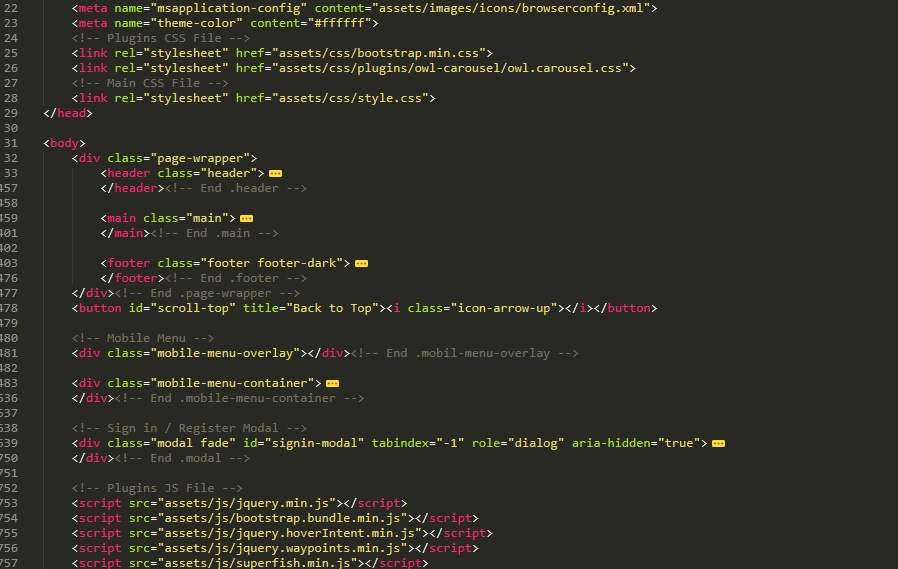
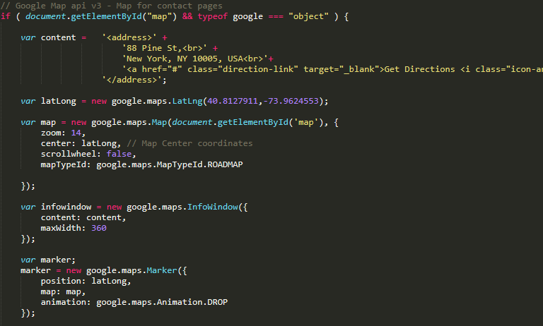

Bootstrap Based eCommerce Template by p-themes
We created this template with Bootstrap Framework(version 4). We highly recommend you to visit getbootstap.com and learn more about bootstrap's grid system, components and plugins.
YOUR CODES GOES HERE
You can use the grid system with 2 columns like this;
YOUR CODES GOES HEREYOUR CODES GOES HERE
You can use the grid system with 3 columns like this;
YOUR CODES GOES HEREYOUR CODES GOES HEREYOUR CODES GOES HERE
Bootstrap v4's grid system is built with flexbox and it is very powerful and easy to understand and use.
All HTML codes are valid. There are no HTML errors. Mostly there are 3 main parts in our HTML pages. Header + Main + Footer section.
Header, Main and footer sections are placed in div tag that has page-wrapper class. Outside of these elements there is mobile menu part and login/register modal in the body tag.
All home pages( index-*.html pages) are easy to separate and create a new demos. Whole images that are used in these pages/demos are placed in the assets/images/demos folder. (demo-2, demo-5 etc...)
All css/sass/js extra codes that used in these demos are also separeted and placed in their separeted folders. css/demos - sass/demos - js/demos etc.. We will talk more about these parts in other sections.
Main Css file of Midas is style.css. Midas is based of bootstrap framework so bootstrap.min.css file is also important one.
All css files are generated with Sass other than bootstrap.min.css. We did not make any changes on bootstrap file. So if you want to update bootstrap version you just have to replace bootstrap.min.css file with the updated one.
Demos folder have extra css files(These are also generated with Sass) that has styles for index-2 to index-20 pages. These contains extra codes for those demos.
Plugin folder has styles for the plugins we used in Midas. Popup, owl carousel, nouslider etc..
You can make changes on Sass file or you can directly edit css files. That's your choice. Both ways are easy to use and code is well commented to guide you.
Skins folder has the skins.css files for demos. For example index-2.html page uses skin-demo-2.css file. You can change or create new skins from this folder or you can see the Sass section to change it via variables.
If you want to use Scss files, please see the structure image. All Scss files all well commented and coded.
Common elements are in the elements folder, pages likes about,contact etc.. are in the pages folder. Headers footers are in the base folder. It is really easy to understand and use.
You can change some predefined styles in the config/_variables_scss file. For example if you want to color scheme all you need to change is $primary-color and $secondary-color varaibles. This will change the color scheme with your colors. Or you can create a new skin file in the skins folder just for he new skin. See below:
/// Variables $font-size: 1.4rem !default; $sidebar-font-size: 1.4rem !default; $footer-font-size: 1.3rem !default; $input-font-size: 1.4rem !default; $button-font-size: 1.4rem !default; $primary-color: #cc9966 !default; $primary-color-dark: #006699 !default; $secondary-color: #a6c76c !default; $secondary-color-dark: #2f3946 !default; $link-color: $primary-color !default; $border-radius: 0 !default; $body-text: #666666 !default; $light-text: #999999 !default; $dark-text: #333333 !default; $headings-text: $dark-text !default; $font-family: 'Poppins', sans-serif !default; $second-font-family: 'Poppins', sans-serif !default; $breakpoints: ( xs: 480px, sm: 576px, md: 768px, lg: 992px, xl: 1200px, xxl: 1600px, xlst: 1920px ); $max-breakpoints: ( xs: 479px, sm: 575px, md: 767px, lg: 991px, xl: 1199px, xxl: 1599px );
To create a new skin all you have to do is reate a new file for example skin-new.scss and set you $primary-color and $secondary-color and import skin.scss file like the one below:
// skin-new.scss $primary-color: #3399ff; $secondary-color: #278bf0; @import 'skin';
After creating new skin file you can find this skin file in the css/skin-new.css. And you can use it in you HTML files like:
In sass/demos files there are some extra codes that are used in that specific demos. index-2.html/demo-2, index-5.html/demo-5 etc...
Also you can use sass/plugins folder to make edits on the plugin styles. You can find the css files generated by these sass files in the css/plugins folder.
In the assets/js folder, you can find all the plugins that we used in the Midas template. main.js file is our main javascript file.
You can change related coordinates at the main.js file. Open main.js file with your text editor and see map related code. You can add multiple markers in location array.
You can create your carousels/sliders in your HTML code like the one below. We used data attributest to init sliders/carousels. You can use data-owl-options attribute to change your carousel's options. You can use every setting that owl carousel plugins has in the data-owl-options attribute. This way you don't have to add unneccesary js code for every slider/carousel you use.
main.js file is well commentend all names are related to what they do. Please feel free to contact us if you have any problems and please check your browser's console and make sure that you don't have any errors.
These are the used plugins/extensions in this template. If you want to learn more about these plugins, please visit their website and see their documentaion.
In these section you will details about the release date, updates, changes and etc..
Upload Date: 28/08/2019 Version: 1.0